File: 000610.gt.txt (if the image is defective, simply delete all Arabic text and the line will be excluded)
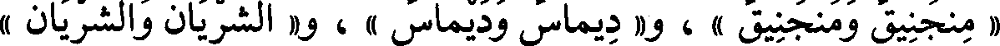
« منجنيق ومنجنيق » ، و« ديماس وديماس » ، و« الشريان والشريان »
File: 000611.gt.txt (if the image is defective, simply delete all Arabic text and the line will be excluded)

شجر(4) تعمل منه القسي .
File: 000612.gt.txt (if the image is defective, simply delete all Arabic text and the line will be excluded)

« خشاش وخشاش » وهو اللطيف الرأس الضرب الجسم ، وجارية بينة
File: 000613.gt.txt (if the image is defective, simply delete all Arabic text and the line will be excluded)

« الشطاط والشطاط »والشطاطة ، وجارية بينة « الجراء والجراء » مصدر
File: 000614.gt.txt (if the image is defective, simply delete all Arabic text and the line will be excluded)

جارية ، ليس بيني وبينه« وجاح ووجاح » و« أجاح وإجاح » أي : ستر .
File: 000615.gt.txt (if the image is defective, simply delete all Arabic text and the line will be excluded)
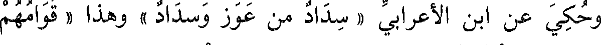
وحكي عن ابن الأعرابي « سداد من عوز وسداد » وهذا « قوامهم
File: 000616.gt.txt (if the image is defective, simply delete all Arabic text and the line will be excluded)

وقوامهم »، و « الوثاق والوثاق » ، وأيام « الحصاد والحصاد » ،
File: 000617.gt.txt (if the image is defective, simply delete all Arabic text and the line will be excluded)
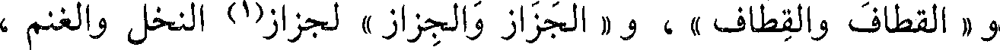
و « القطاف والقطاف » ، و « الجزاز والجزاز » لجزاز(1) النخل والغنم ،
File: 000618.gt.txt (if the image is defective, simply delete all Arabic text and the line will be excluded)
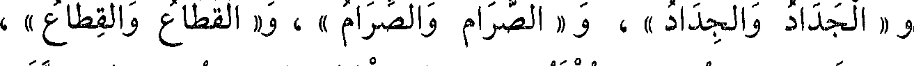
و « الجداد والجداد » ، و « الصرام والصرام » ، و« القطاع والقطاع » ،
File: 000619.gt.txt (if the image is defective, simply delete all Arabic text and the line will be excluded)

و « الكناز والكناز » حين يكنز التمر ، و « الجرام والجرام » ، و« الرفاع
File: 000620.gt.txt (if the image is defective, simply delete all Arabic text and the line will be excluded)
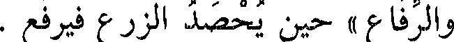
والرفاع » حين يحصد الزرع فيرفع .
File: 000621.gt.txt (if the image is defective, simply delete all Arabic text and the line will be excluded)

قال الكسائي : سمعت أخواتها بالوجهين ، إلا « الرفاع » ؛فإني لم
File: 000622.gt.txt (if the image is defective, simply delete all Arabic text and the line will be excluded)
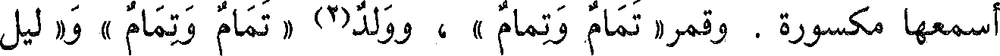
أسمعها مكسورة . وقمر« تمام وتمام » ، وولد(2) « تمام وتمام »، و« ليل
File: 000623.gt.txt (if the image is defective, simply delete all Arabic text and the line will be excluded)

باب فعال وفعال
File: 000624.gt.txt (if the image is defective, simply delete all Arabic text and the line will be excluded)

تمام «» لا غير.
File: 000625.gt.txt (if the image is defective, simply delete all Arabic text and the line will be excluded)

« سوار المرأة وسوار » ، و« هو حسن الجوار والجوار » ، و« حوار
File: 000626.gt.txt (if the image is defective, simply delete all Arabic text and the line will be excluded)
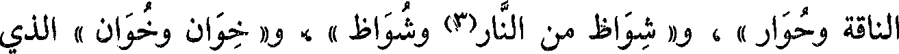
الناقة وحوار » ، و« شواظ من النار(3) وشواظ »، و« خوان وخوان » للذي
File: 000627.gt.txt (if the image is defective, simply delete all Arabic text and the line will be excluded)

يؤكل [ 570 ] عليه ، و« الهيام والهيام » داء يأخذ الإبل ، و« النداء
File: 000628.gt.txt (if the image is defective, simply delete all Arabic text and the line will be excluded)
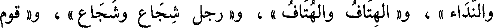
والنداء » ، و« الهتاف والهتاف » ، و« رجل شجاع وشجاع» ، و« قوم
File: 000629.gt.txt (if the image is defective, simply delete all Arabic text and the line will be excluded)

باب ما يقال بالياء والواو
File: 000630.gt.txt (if the image is defective, simply delete all Arabic text and the line will be excluded)

رجل « سبروت وسبريت » ، وبينهما « بون » في الفضل ، و« بين » ،
File: 000631.gt.txt (if the image is defective, simply delete all Arabic text and the line will be excluded)

فأما في البعد فلا يقال(1) إلا « بين » ؛ أتانا ل«توفاق » الهلال و«تيفاق »
File: 000632.gt.txt (if the image is defective, simply delete all Arabic text and the line will be excluded)

الهلال(2) ؛أي : حين أهل الهلال ؛ وهو يمشي « الخوزلى »
File: 000633.gt.txt (if the image is defective, simply delete all Arabic text and the line will be excluded)

و« الخيزلى » ؛ وهي « العجاوة » و« العجاية » ، لعصبة تكون(3) في فرسن
File: 000634.gt.txt (if the image is defective, simply delete all Arabic text and the line will be excluded)

البعير ، وهو سريع « الأبية » و« الأوبة » ؛ وهي « المصائب »
File: 000635.gt.txt (if the image is defective, simply delete all Arabic text and the line will be excluded)

و«المصاوب » ، أجد بقلبي « لوطا » و« ليطا » ؛ وهذه « نقاوة » الشيء
File: 000636.gt.txt (if the image is defective, simply delete all Arabic text and the line will be excluded)

و« نقايته » ، أي : خياره ، وفلان « أحول » منك(4) و«أحيل » ، من
File: 000637.gt.txt (if the image is defective, simply delete all Arabic text and the line will be excluded)

الحيلة ؛ وهو « المتأوب » و«المتأيب » ، وهو من « صيابة » قومه
File: 000638.gt.txt (if the image is defective, simply delete all Arabic text and the line will be excluded)

و« صوابتهم » ، أي : صميمهم ؛ وداهية « دهياء » و« دهواء» ؛ وأرض
File: 000639.gt.txt (if the image is defective, simply delete all Arabic text and the line will be excluded)
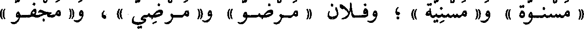
« مسنوة » و« مسنية » ؛ وفلان « مرضو » و« مرضي » ، و« مجفو »
File: 000640.gt.txt (if the image is defective, simply delete all Arabic text and the line will be excluded)

و« مجفي » ، قال الشاعر(5) :
File: 000641.gt.txt (if the image is defective, simply delete all Arabic text and the line will be excluded)
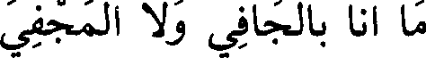
ما أنا بالجافي ولا المجفي
File: 000642.gt.txt (if the image is defective, simply delete all Arabic text and the line will be excluded)

قال : بناه على جفي ، وقال الآخر(6) : [ 592 ]
File: 000643.gt.txt (if the image is defective, simply delete all Arabic text and the line will be excluded)

« عور » ، و« شتر » و« صلع » و« قطع » ، و« أدر » ، و« حبن » ،
File: 000644.gt.txt (if the image is defective, simply delete all Arabic text and the line will be excluded)

و« هوج » .
File: 000645.gt.txt (if the image is defective, simply delete all Arabic text and the line will be excluded)

وشذ منه شيء فقالوا : « مال » في الأميل ، والقياس « ميل » ، وقالوا
File: 000646.gt.txt (if the image is defective, simply delete all Arabic text and the line will be excluded)
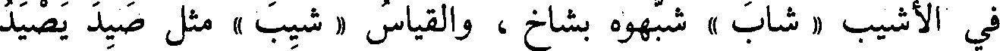
في الأشيب « شاب » شبهوه بشاخ ، والقياس « شيب » مثل صيد يصيد
File: 000647.gt.txt (if the image is defective, simply delete all Arabic text and the line will be excluded)

وشمط يشمط .
File: 000648.gt.txt (if the image is defective, simply delete all Arabic text and the line will be excluded)

قالوا : والأدواء(1) إذا كانت على « فعال » أتت بضم الفاء ، مثل
File: 000649.gt.txt (if the image is defective, simply delete all Arabic text and the line will be excluded)

« القلاب » ، [604] و« الخمال » ، و« النحاز » ، و« الدكاع » ،
File: 000650.gt.txt (if the image is defective, simply delete all Arabic text and the line will be excluded)

و« السهام » ، و« السكات » ، و« الصفار » ، و« الصداع » ، و « الكباد » ،
File: 000651.gt.txt (if the image is defective, simply delete all Arabic text and the line will be excluded)

و« البوال » ، و « الدوار » ، و « الخمار » لأنه داء ، و« العطاش » ،
File: 000652.gt.txt (if the image is defective, simply delete all Arabic text and the line will be excluded)
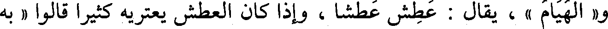
و« الهيام » ، يقال : عطش عطشا ، وإذا كان العطش يعتريه كثيرا قالوا « به
File: 000653.gt.txt (if the image is defective, simply delete all Arabic text and the line will be excluded)

عطاش » ، وتقول(2) : قاء يقيء قيئا ، فإذا كان القيء يعتريه كثيرا(3)
File: 000654.gt.txt (if the image is defective, simply delete all Arabic text and the line will be excluded)

قالت(4) : « به قياء » ؛ وتقول : فلان يقوم(5) قياما كثيرا إذا أردت أنه يختلف
File: 000655.gt.txt (if the image is defective, simply delete all Arabic text and the line will be excluded)

إلى المتوضأ ، فإن أردت اسم ما به قلت « به قوام » .
File: 000656.gt.txt (if the image is defective, simply delete all Arabic text and the line will be excluded)

هذا كله وأشباهه بضم الفاء من « فعال » ، إلا حرفا واحدا ، كان أبو
File: 000657.gt.txt (if the image is defective, simply delete all Arabic text and the line will be excluded)

عمرو الشيباني يفتح أوله ، وتابعه على ذلك عمارة(6) وهو « السواف » داء من
File: 000658.gt.txt (if the image is defective, simply delete all Arabic text and the line will be excluded)

أدواء الإبل ، وكان الأصمعي يضم أوله ، ويلحقه بأمثاله من الأدواء .
File: 000659.gt.txt (if the image is defective, simply delete all Arabic text and the line will be excluded)
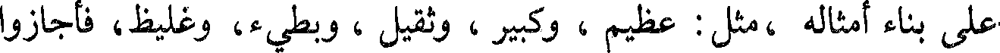
على بناء أمثاله ، مثل : عظيم، وكبير ، وثقيل ، وبطيء، وغليظ، فأجازوا